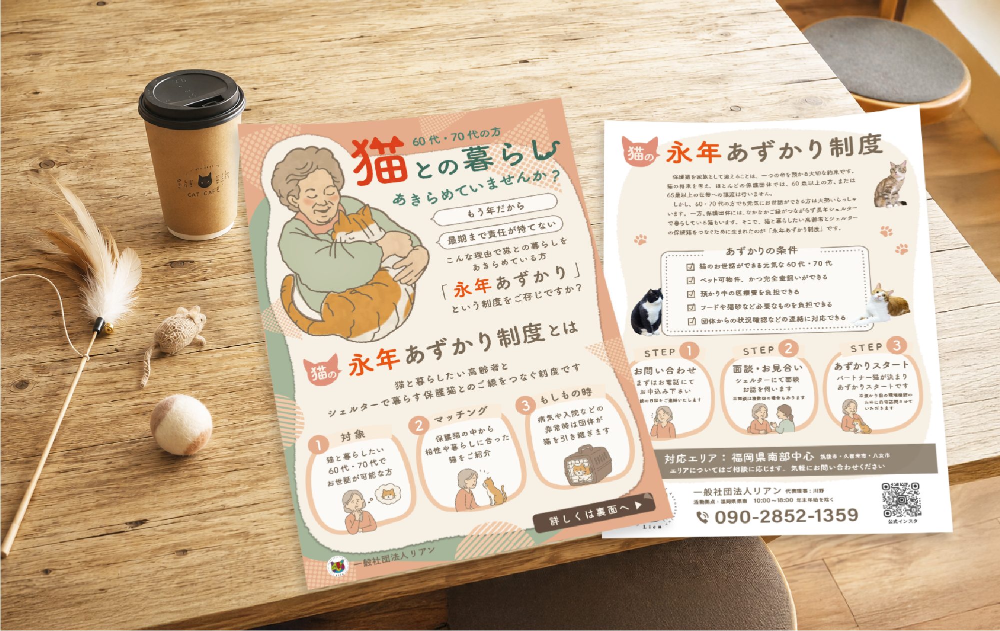
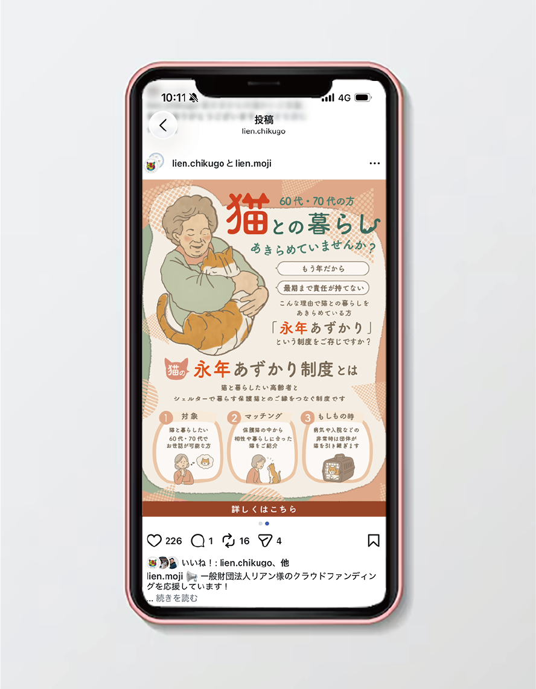
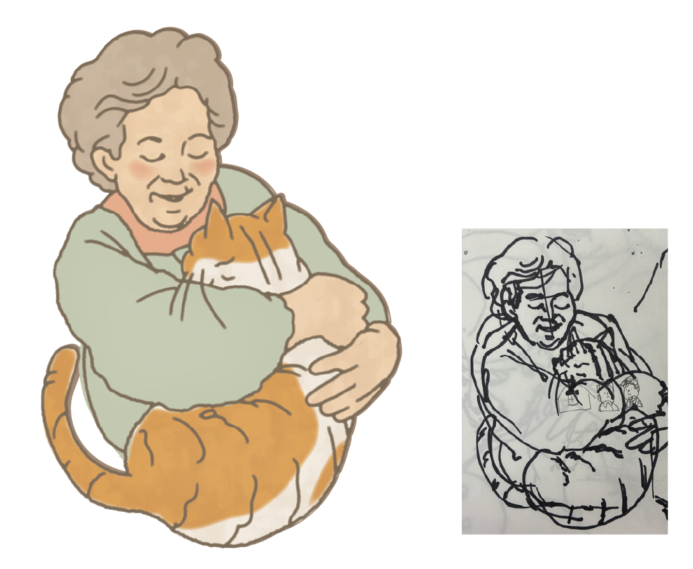
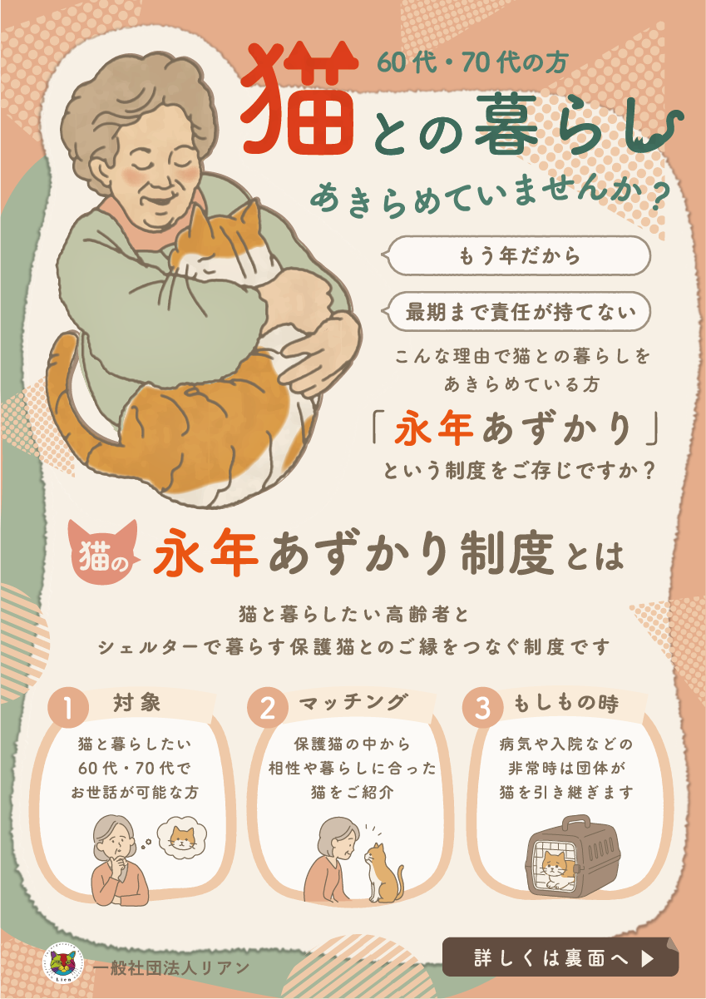
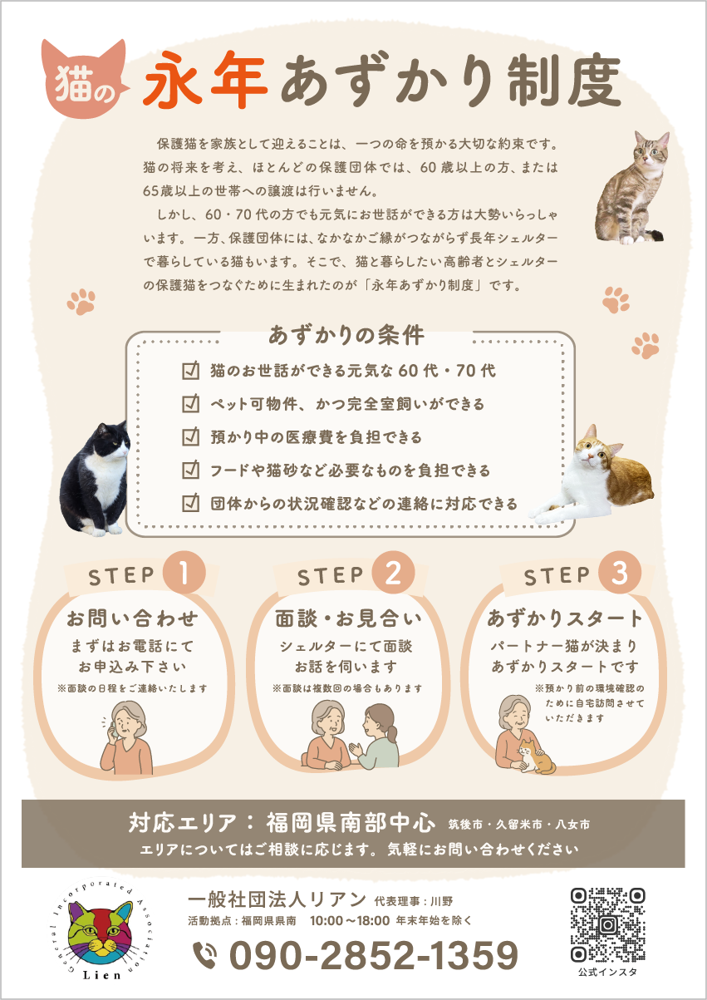

← BACK TO WORKS
インスタ広告
イラストと下絵
猫の永年あずかり制度
GRAPHIC
リーフレット

動物保護団体の「永年あずかり制度」を紹介するリーフレット制作しました。
60·70代というターゲット層に配慮し、イラストで概要が把握できる構成と大き目のフォントで見
やすく工夫しました。イラストは手描きをイラストレーターでトレース、彩色して作成。




- Project
- 猫の永年あずかり制度
- Category
- リーフレット
- 制作
- 2026年7月